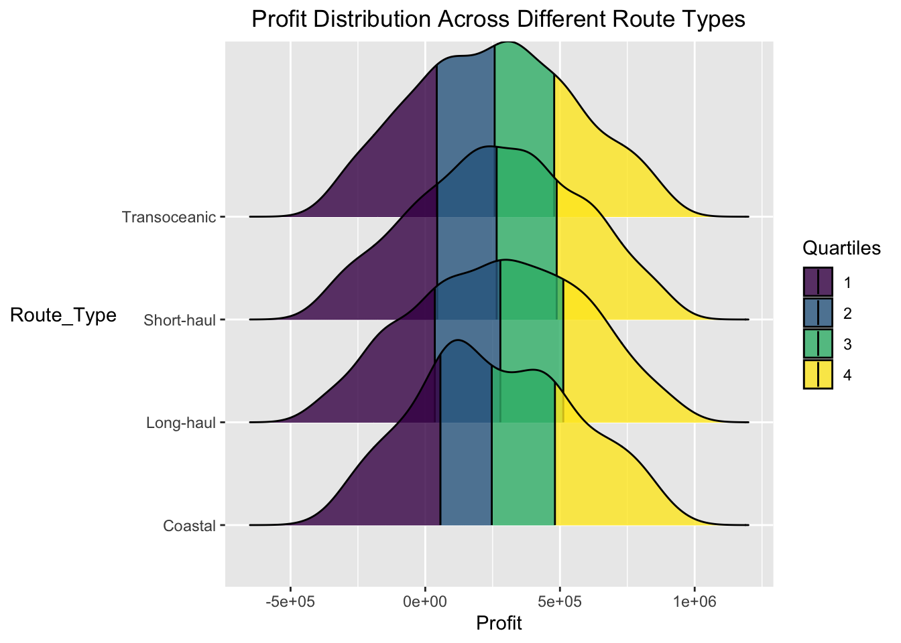
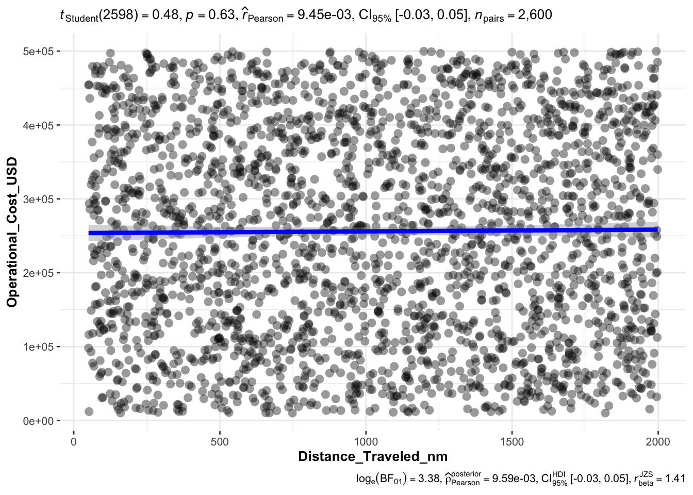
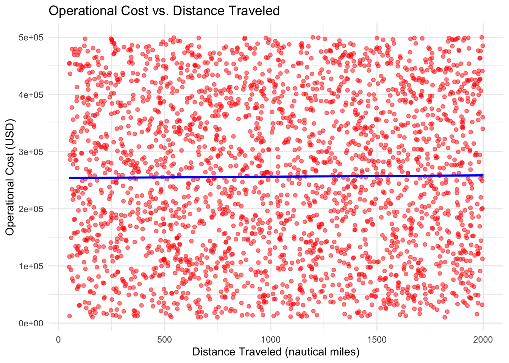
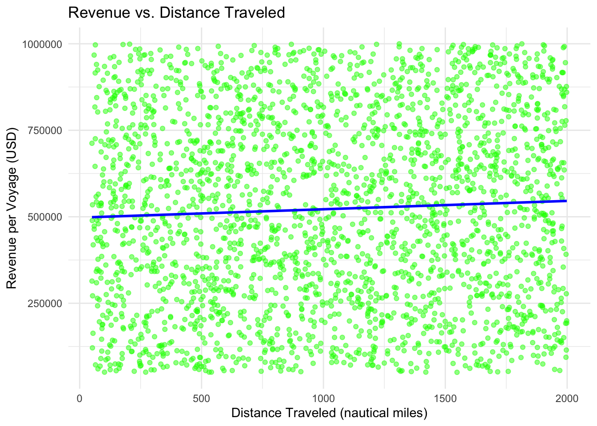
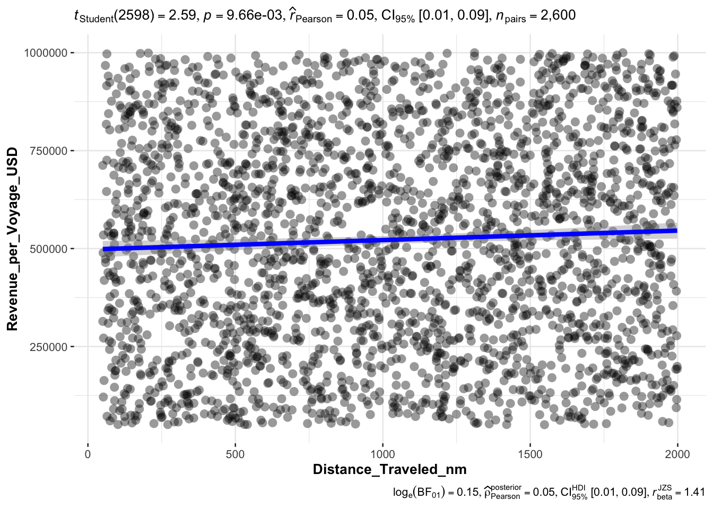
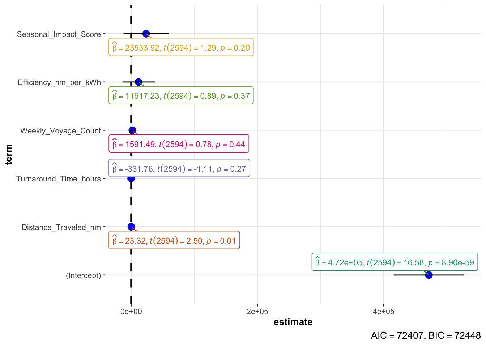
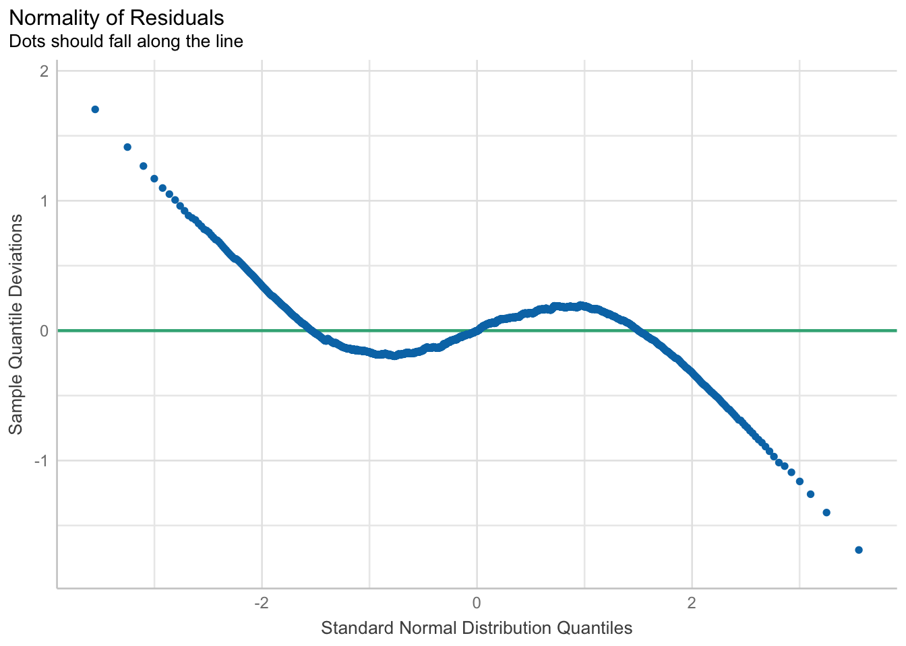
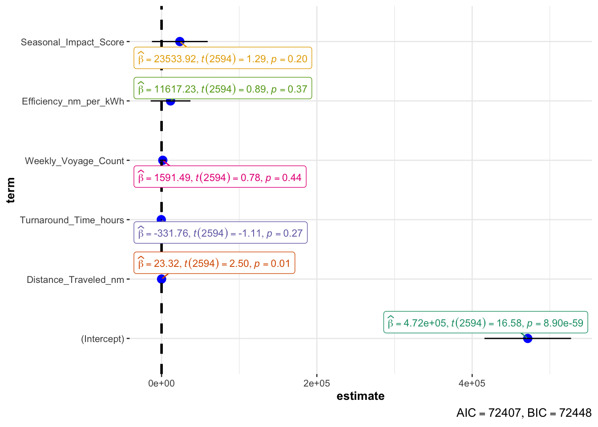

pacman::p_load(tidyverse,ggthemes,
ggridges, ggdist,
patchwork, scales,
corrplot, ggstatsplot,
plotly,ggpubr,
performance)Take-home_Ex01
1. Overview
1.1 Setting the scene
An international media company that publishes weekly content on digital platforms is planning to release articles on the following themes:
- Ship Performance in the Gulf of Guinea
1.2 The Task
In this exercise, Exploratory Data Analysis (EDA) methods and ggplot functions are used to:
Understand which types of shipping routes have the highest profitability
Explore the factors that influence operational costs and profitability to optimize route selection and business strategies
2. Getting started
We load the following R packages using the pacman::p_load() function:
tidyverse: Core collection of R packages designed for data science
ggthemes: to use additional themes for ggplot2
patchwork: to prepare composite figure created using ggplot2
ggridges: to plot ridgeline plots
ggdist: for visualizations of distributions and uncertainty
scales: provides the internal scaling infrastructure used by ggplot2
plotly: R library for plotting interactive statistical graphs
ggstatsplot: Based Plots with Statistical Details
ggpubr: For publication-ready plots
2.1 Import data
In this project, Ship Performance in the Gulf of Guinea will be used. The data was downloaded from kaggle website.
The code chunk below imports the data into R and save it into a tibble data frame object called ship_pf.
ship_pf <- read_csv("data/Ship_Performance_Dataset.csv")The data, ship_pf, has 18 columns(variables) and 2,736 rows(observations).
2.2 About Dataset
The Ship Performance Dataset is a synthetic yet realistic collection of data designed to represent key operational metrics and attributes of various ship types in the Gulf of Guinea. This dataset is tailored for maritime data analytics enthusiasts, machine learning practitioners, and professionals interested in exploring clustering, prediction, and optimization problems in the maritime industry.
3. Data Wrangling
3.1 Checking for Duplicates and Missing Values
The dataset from Ship Performance Clustering Dataset is expected to be relatively clean. Nevertheless, due diligence checks for duplicates and missing values are still made to confirm the assumption.
The duplicated() function in the base package is used to check for duplicates in ship_pf. There are no duplicates in the tibble data frame.
ship_pf[duplicated(ship_pf), ]# A tibble: 0 × 18
# ℹ 18 variables: Date <date>, Ship_Type <chr>, Route_Type <chr>,
# Engine_Type <chr>, Maintenance_Status <chr>, Speed_Over_Ground_knots <dbl>,
# Engine_Power_kW <dbl>, Distance_Traveled_nm <dbl>, Draft_meters <dbl>,
# Weather_Condition <chr>, Cargo_Weight_tons <dbl>,
# Operational_Cost_USD <dbl>, Revenue_per_Voyage_USD <dbl>,
# Turnaround_Time_hours <dbl>, Efficiency_nm_per_kWh <dbl>,
# Seasonal_Impact_Score <dbl>, Weekly_Voyage_Count <dbl>, …Next, we will check about if there is any missing value in the dataset. The code chunk below can help us to do so.
colSums(is.na(ship_pf)) Date Ship_Type Route_Type
0 0 0
Engine_Type Maintenance_Status Speed_Over_Ground_knots
0 0 0
Engine_Power_kW Distance_Traveled_nm Draft_meters
0 0 0
Weather_Condition Cargo_Weight_tons Operational_Cost_USD
0 0 0
Revenue_per_Voyage_USD Turnaround_Time_hours Efficiency_nm_per_kWh
0 0 0
Seasonal_Impact_Score Weekly_Voyage_Count Average_Load_Percentage
0 0 0 The colSums() function in the base package is used to check for missing values in ship_pf. There are no missing values in the tibble data frame.
As our objective is to determine the most profitable route type, we will focus on routes with a specified classification, excluding those categorized as “None” in this dataset.
The code chunk below will be used:
ship_pf <- ship_pf %>%
filter(Route_Type != "None")In the next step, we will generate a new column, Profit, to facilitate further analysis. The following code snippet will be utilized.
ship_pf <- ship_pf %>%
mutate(Profit = Revenue_per_Voyage_USD - Operational_Cost_USD)Upon completing the aforementioned steps, we should obtain a refined dataset suitable for further analysis. Prior to proceeding, we will execute the following code to ensure that the data has been appropriately cleaned.
print(ship_pf)# A tibble: 2,600 × 19
Date Ship_Type Route_Type Engine_Type Maintenance_Status
<date> <chr> <chr> <chr> <chr>
1 2023-06-11 Fish Carrier Short-haul Steam Turbine Good
2 2023-06-18 Container Ship Long-haul Diesel Fair
3 2023-06-25 Bulk Carrier Transoceanic Steam Turbine Fair
4 2023-07-02 Fish Carrier Transoceanic Diesel Fair
5 2023-07-09 Fish Carrier Long-haul Heavy Fuel Oil (HF… Fair
6 2023-07-16 Fish Carrier Transoceanic Heavy Fuel Oil (HF… Critical
7 2023-07-23 Container Ship Short-haul Diesel Critical
8 2023-07-30 None Coastal Heavy Fuel Oil (HF… Good
9 2023-08-06 Container Ship Long-haul Diesel Fair
10 2023-08-13 Fish Carrier Short-haul Steam Turbine Fair
# ℹ 2,590 more rows
# ℹ 14 more variables: Speed_Over_Ground_knots <dbl>, Engine_Power_kW <dbl>,
# Distance_Traveled_nm <dbl>, Draft_meters <dbl>, Weather_Condition <chr>,
# Cargo_Weight_tons <dbl>, Operational_Cost_USD <dbl>,
# Revenue_per_Voyage_USD <dbl>, Turnaround_Time_hours <dbl>,
# Efficiency_nm_per_kWh <dbl>, Seasonal_Impact_Score <dbl>,
# Weekly_Voyage_Count <dbl>, Average_Load_Percentage <dbl>, Profit <dbl>4. Exploratory Data Analysis
4.1 Distribution of Profits across different Route Type
A ridgeline plot is created to visualize the distribution of profits across different route types in the dataset.
Initially, the ggplot() function is used to map the “Profit” variable to the x-axis and the “Route_Type” variable to the y-axis. The fill aesthetic is set to represent the quantiles of the data using the after_stat() function, which calculates and groups the data into quartiles.
The stat_density_ridges() function from the ggridges package is then used to create the ridgeline plot, with the calc_ecdf argument set to TRUE to calculate the empirical cumulative distribution function. The quantiles are set to 4, and quantile lines are included to visually distinguish the quartile boundaries.
To improve the plot’s visual appeal, the scale_fill_viridis_d() function is used to apply a color palette for the fill, and the plot title is added using ggtitle(). Finally, the theme() function is used to adjust the appearance, centering the title and rotating the y-axis label for better clarity.

ggplot(ship_pf,
aes(x = Profit,
y = Route_Type,
fill = factor(after_stat(quantile)))) +
stat_density_ridges(
geom = "density_ridges_gradient",
calc_ecdf = TRUE,
quantiles = 4,
quantile_lines = TRUE) +
scale_fill_viridis_d(name = "Quartiles", alpha = 0.8) +
ggtitle(label = "Profit Distribution Across Different Route Types") +
theme(plot.title = element_text(hjust = 0.5),
axis.title.y = element_text(angle=360, vjust=.5, hjust=1))The table below provides an overview of the average profit associated with each route type.
# A tibble: 4 × 5
Route_Type Avg_Profit Avg_Cost Avg_Revenue Count
<chr> <dbl> <dbl> <dbl> <int>
1 Long-haul 273592. 256569. 530162. 686
2 Short-haul 268698. 257654. 526352. 626
3 Coastal 265395. 248232. 513627. 650
4 Transoceanic 257577. 261872. 519449. 638profit_summary <- ship_pf %>%
group_by(Route_Type) %>%
summarise(
Avg_Profit = mean(Profit, na.rm = TRUE),
Avg_Cost = mean(Operational_Cost_USD, na.rm = TRUE),
Avg_Revenue = mean(Revenue_per_Voyage_USD, na.rm = TRUE),
Count = n()
) %>%
arrange(desc(Avg_Profit))
print(profit_summary)The box plot below illustrates additional details regarding the various route types, including the average, maximum, and minimum profit values.
p2 <- ggplot(ship_pf, aes(x = Route_Type, y = Profit, fill = Route_Type)) +
geom_boxplot(alpha = 0.6) +
stat_summary(fun=mean, geom="point", shape=18, size=3, color="red") +
theme_minimal() +
labs(title = "Profit Distribution by Route Type",
x = "Route Type",
y = "Net Profit (USD)") +
theme(legend.position = "none")
ggplotly(p2)Observation: Based on the charts above, we can observe that the Long-haul route type demonstrates the highest profit among all route types. Also, based on the quartile lines, the profit of Long-haul routes tend to be higher than that of other route types. This finding aligns with the general expectation that Long-haul routes tend to generate higher revenue, likely due to higher pricing structures and increased demand for long-distance transportation.
Future research in this area could explore the profitability trends over time and examine whether external factors, such as fuel prices, regulatory policies, and shifts in consumer demand, influence the profitability of different route types. Additionally, investigating the impact of seasonality and economic cycles on route profitability may provide further insights into optimizing logistics and revenue strategies.
4.2 Relationship between Operational Cost and Distance Traveled
As we know that the long-haul route type has the highest profit among all route types, we want to check whether the distance traveled influences the operational cost.
The ggscatterstats() function from the ggstatsplot package is used to create a scatter plot that visualizes the relationship between Distance_Traveled_nm and Operational_Cost_USD in the ship_pf dataset. This function also overlays a regression line and provides detailed statistical annotations.
The marginal = FALSE argument disables marginal histograms or density plots, focusing the visualization solely on the scatter plot and regression analysis. The black scatter points represent individual data points, while the blue regression line provides a visual representation of the trend.

ggscatterstats(
data = ship_pf,
x = Distance_Traveled_nm,
y = Operational_Cost_USD,
marginal = FALSE,
)Observation: Based on the scatter plot, the distribution of data points suggests no clear trend between sailing distance and operating costs. If the two variables were highly correlated, a distinct linear pattern (either upward or downward) would be visible. However, the nearly uniform spread of points indicates minimal association between the two. The statistical analysis further supports this conclusion, as the Pearson correlation coefficient is close to zero (0.00945), and the p-value (0.63) is far above the 0.05 threshold, failing to reject the null hypothesis. Additionally, the Bayesian factor (BF) provides strong evidence supporting the absence of a meaningful relationship. The regression line is nearly flat, suggesting that increases in sailing distance have little impact on operating costs.
4.3 Relationship between Operational Cost and Seasonal Impact
Next, we want to check whether seasonal impact has a noticeable influence on operational costs.
The ggplot() function from the ggplot2 package is used to generate a scatter plot that examines the relationship between Seasonal_Impact_Score and Operational_Cost_USD in the ship_pf dataset.
To further investigate the potential relationship, the geom_smooth() function is used to overlay a linear regression line in red, with the se = FALSE argument to exclude the confidence interval shading. The theme_minimal() function is applied to ensure a clean and simple visual style, while the labs() function customizes the plot title and axis labels for better readability.

ggplot(ship_pf, aes(x = Seasonal_Impact_Score, y = Operational_Cost_USD)) +
geom_point(alpha = 0.5, color = "purple") +
geom_smooth(method = "lm", se = FALSE, color = "red") +
theme_minimal() +
labs(title = "Operational Cost vs. Seasonal Impact",
x = "Seasonal Impact Score",
y = "Operational Cost (USD)")Observation: Based on the chart above, we can observe a slight increase in operational costs as the seasonal impact score rises. This suggests that seasonal impact may have some influence on operational costs, but the effect is not particularly strong. Therefore, we believe that there may be other factors influencing the cost.
4.4 Relationship between Operational Cost and Fuel Efficiency
We want to check whether fuel efficiency has a noticeable influence on operational costs.
The ggplot() function from the ggplot2 package is used to generate a scatter plot that examines the relationship between Efficiency_nm_per_kWh and Operational_Cost_USD in the ship_pf dataset.
To further investigate the potential relationship, the geom_smooth() function is used to overlay a linear regression line in red, with the se = FALSE argument to exclude the confidence interval shading. The theme_minimal() function is applied to ensure a clean and simple visual style, while the labs() function customizes the plot title and axis labels for better readability.

ggplot(ship_pf, aes(x = Efficiency_nm_per_kWh, y = Operational_Cost_USD)) +
geom_point(alpha = 0.5, color = "orange") +
geom_smooth(method = "lm", se = FALSE, color = "blue") +
theme_minimal() +
labs(title = "Operational Cost vs. Fuel Efficiency",
x = "Fuel Efficiency (nm per liter)",
y = "Operational Cost (USD)")Observation: Based on the chart above, we can observe that there is no significant change in operational costs as fuel efficiency increases. This suggests that fuel efficiency may not have a substantial impact on operational costs.
In our analysis of three factors influencing operational costs, we found that only seasonal impact exhibited a noticeable effect, whereas the other two factors—travel distance and fuel efficiency—appeared to have little to no impact. This could be attributed to the multifaceted nature of operational costs, which are likely influenced by a combination of factors rather than being determined by a single variable. External elements such as maintenance expenses, labor costs, and route-specific conditions may play a more significant role in shaping overall expenditures. Given these complexities, a more comprehensive approach is required to fully understand cost determinants. This presents an opportunity for future research to explore potential interactions among multiple variables and their collective influence on operational costs.
4.5 Relationship between Revenue per Voyage and Distance Traveled
As we know that the long-haul route type has the highest profit among all route types, we want to check whether the distance traveled influences the revenue per voyage.
The ggscatterstats() function from the ggstatsplot package is used to create a scatter plot that visualizes the relationship between Distance_Traveled_nm and Operational_Cost_USD in the ship_pf dataset. This function also overlays a regression line and provides detailed statistical annotations.
The marginal = FALSE argument disables marginal histograms or density plots, focusing the visualization solely on the scatter plot and regression analysis. The black scatter points represent individual data points, while the blue regression line provides a visual representation of the trend.

ggscatterstats(
data = ship_pf,
x = Distance_Traveled_nm,
y = Revenue_per_Voyage_USD,
marginal = FALSE,
)Observation: Based on the chart above, we can observe that there is the slight increase for revenue as the distance traveled rise. This suggests that distance traveled may have some influence on revenue per voyage. The statistical analysis further supports this conclusion, as the Pearson correlation coefficient is 0.05, indicating a weak positive correlation. The p-value (0.00966) is below the 0.05 threshold, suggesting statistical significance. However, the data indicates that there is only a weak positive correlation between them. This implies that while the relationship is statistically significant, its impact on revenue per voyage is not that substantial.
4.6 An Exploration of Factors Potentially Impacting Revenue
The code chunk below is used to calibrate a multiple linear regression model by using lm() of Base Stats of R.
model <- lm(Revenue_per_Voyage_USD ~ Distance_Traveled_nm + Turnaround_Time_hours + Weekly_Voyage_Count +
Efficiency_nm_per_kWh + Seasonal_Impact_Score, data = ship_pf)
model
Call:
lm(formula = Revenue_per_Voyage_USD ~ Distance_Traveled_nm +
Turnaround_Time_hours + Weekly_Voyage_Count + Efficiency_nm_per_kWh +
Seasonal_Impact_Score, data = ship_pf)
Coefficients:
(Intercept) Distance_Traveled_nm Turnaround_Time_hours
471608.38 23.32 -331.76
Weekly_Voyage_Count Efficiency_nm_per_kWh Seasonal_Impact_Score
1591.49 11617.23 23533.92 The code above constructs a linear regression model aimed at predicting Revenue_per_Voyage_USD (voyage revenue). Here, Revenue_per_Voyage_USD serves as the dependent variable (the target variable), while Distance_Traveled_nm (distance traveled in nautical miles), Turnaround_Time_hours (turnaround time in hours), Weekly_Voyage_Count (number of weekly voyages), Efficiency_nm_per_kWh (energy efficiency in nautical miles per kilowatt-hour), and Seasonal_Impact_Score (seasonal impact factor) act as the independent variables (the predictors).
The code chunk below will be used to check the collinearity.
check_c <- check_collinearity(model)
plot(check_c)
Based on the chart above, we can observe that all predictor variables (Distance_Traveled_nm, Efficiency_nm_per_kWh, Seasonal_Impact_Score, Turnaround_Time_hours, and Weekly_Voyage_Count) have Variance Inflation Factors (VIF) below 5, indicating low multicollinearity. This suggests that there is no severe correlation between the independent variables, which is beneficial for the stability of the regression model.
Next, we will check the normality.
check_n <- check_normality(model)
plot(check_n)
Based on the chart above, we can observe that while most residuals follow the expected normal distribution, the points at both tails deviate significantly from the straight line. This suggests the presence of heavy tails, indicating that extreme values deviate from normality.
The middle section of the Q-Q plot aligns closely with the diagonal reference line, meaning that the majority of residuals approximate a normal distribution. However, the deviation at the tails implies that the assumption of normality is violated in extreme cases. Further investigation, such as applying transformations or identifying influential points, may be necessary to improve model assumptions.
In the code below, ggcoefstats() of ggstatsplot package to visualise the parameters of a regression model.
ggcoefstats(model,
output = "plot")
Based on the chart above, we can observe that Distance_Traveled_nm is the only statistically significant variable in the model (p = 0.01). The positive coefficient (β̂ = 23.32) suggests that as the distance traveled increases, the revenue per voyage also rises. This indicates that distance traveled has a measurable influence on revenue, albeit with a relatively small effect size.
However, other variables, including Turnaround_Time_hours, Weekly_Voyage_Count, Efficiency_nm_per_kWh, and Seasonal_Impact_Score, have p-values well above the 0.05 significance threshold, suggesting that they do not have a statistically significant impact on revenue in this model.
It is important to note that the normality of residuals is questionable, as shown in the Q-Q plot (second chart). The presence of heavy tails suggests potential outliers or a non-normal error distribution, which may affect the reliability of the statistical inference, particularly the p-values. Future research should consider nonlinear models to improve prediction accuracy.
5. Summary
Our analysis of ship performance in the Gulf of Guinea and the relationship between factors that may influence operational costs and revenue revealed that the long-haul route type has the highest profit among all route types.
Key Findings:
The long-haul route type has the highest profit among all route types
The seasonal impact has slight influence on the operational cost
From a single-factor perspective, distance traveled or fuel efficiency alone does not have a significant impact on operational cost
The revenue will slightly increase as the distance traveled rise
From a single-factor perspective, only distance traveled has a slight impact on revenue per voyage, other factor alone does not have a significant impact on operational cost
Recommendations for future research:
Confirmatory data analysis: Future studies could incorporate additional statistical tests to validate the findings from this exploratory data analysis and establish more definitive correlations and causation.
Exploring Additional Variables: A more comprehensive analysis that incorporates a wider range of variables could provide deeper insights into cost and revenue. Examining the combined effects of multiple factors, rather than focusing on a single variable, is crucial for understanding their overall impact. Additionally, exploring interactions between operational efficiency, market conditions, and resource allocation warrants further investigation to assess their influence on financial outcomes.
By addressing these areas, future research can provide a more comprehensive understanding of the various factors that influence vessel costs and revenue, thereby aiding in the development of the most profitable shipping routes and operational models.